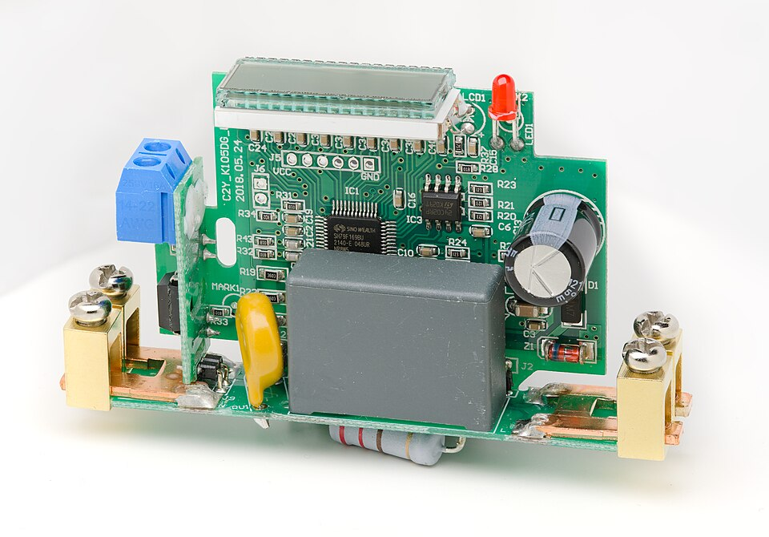

Check a commercial power meter reading
Use a low-voltage energy exercise and a meter display case to diagnose a wrong CT ratio, a sign problem or bad BMS units.
Recognise the meter, sensors and communications path
A commercial feeder meter may have voltage references from each phase, current transformers (CTs) selected for that feeder and communications to a gateway or supervisor. Some smaller meters take the load current directly. Some installations use a different sensor type such as a Rogowski coil or a voltage-output CT. Identify the exact meter, the current input type, the phase map, CT primary and secondary ratings, and declared import direction from the drawings and labels.

Photo by Ali@gwc.org.uk, Wikimedia thumbnail, with on-page callouts. Original photo · CC BY-SA 2.5.


Photo by Phiarc, Wikimedia thumbnail, with on-page callouts. Original photo · CC BY-SA 4.0.

Watch Schneider Electric’s PM5000 programming walkthrough. Find the current transformer ratio, wiring mode and communications settings. Use the paper case for your own checks. Schneider Electric’s PM5000 programming walkthrough on YouTube.
Work from photos and approved read-only records. Do not open a mains panel for this exercise. A current-output CT with an energised primary can develop dangerous secondary voltage if its circuit is opened. Follow the equipment and site requirements through an authorised electrical worker. T46 · CT ratio, phase pairing and energy.
Measure energy at low voltage first
Repeat the DC measurement exercise with your own isolated low-voltage load. For an example, a stable 5.0 V and 0.20 A uses 1.0 W. Record the start and stop times.
Calculate energy by multiplying average power by time in hours. At 1.0 W for six minutes, you use 0.10 Wh. Double the load at the same voltage while keeping its ratings and supply limit. Compare the energy accumulated over an equal duration.
On paper, take a CT with 200 A primary rated current at 5 A secondary rated current. The ratio is 40:1. A secondary 2.5 A corresponds to 100 A primary in the ideal example. If the meter already reports primary amps, use that reading directly in the BMS. Find the units and scaling in the exact register list.
Compare display, raw value and trend
| Training symptom | Best first comparison |
|---|---|
| Meter shows 100 A. BMS shows 4000 A. | Compare the register value, declared scaling and BMS multiplier. The 40× difference matches a ratio applied twice in this example. |
| One phase shows negative power on a known consuming feeder. | Ask the electrical technician to verify load direction convention, phase mapping and CT orientation against documents. Actual export can be negative too. |
| Meter shows 3.6 kW. BMS chart shows 3600 kW. | Check whether the register gives W or kW and where the conversion is applied. |
| Import energy rises from 1100.00 to 1100.60 kWh in ten minutes. | The mean power for that interval is 3.6 kW. Compare with the trend for the same window. A single instantaneous reading can differ. |
For Modbus, match model and register table first. Confirm addressing convention, type, word order, scaling and quality. An example from one PM5000 model need not match another. Preserve the original readout and time before proposing a change. Schneider PM5000 register lists.
Record a calculated Wh result, the worked CT ratio and an example where the meter display and BMS disagree. State which comparison locates the problem and which work needs the electrical technician.